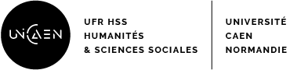
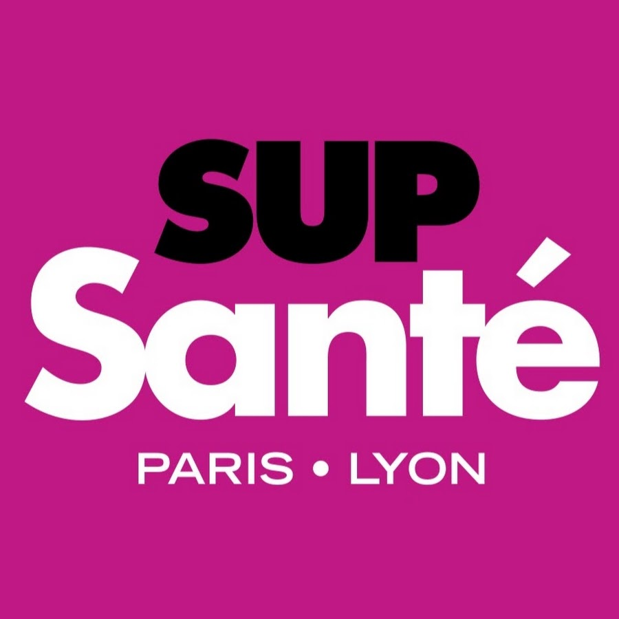
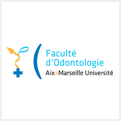
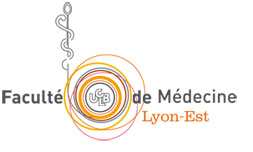
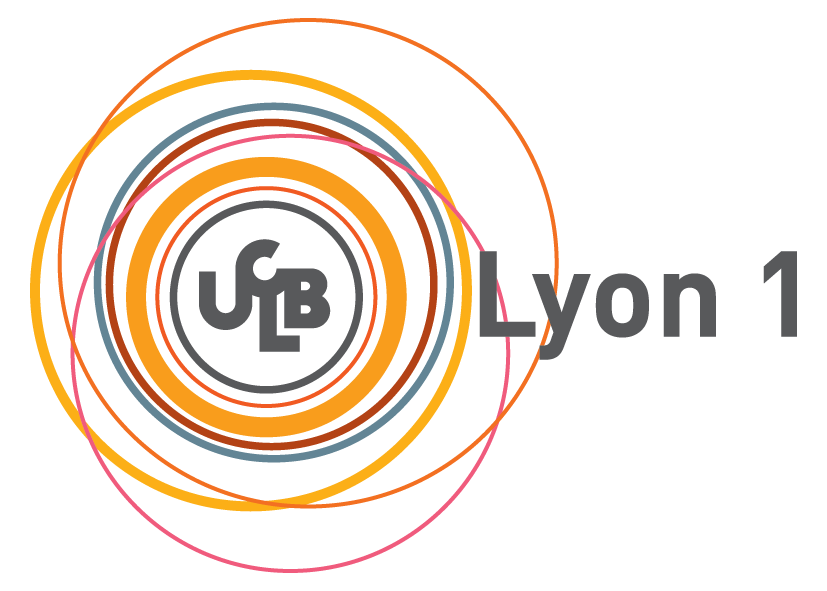
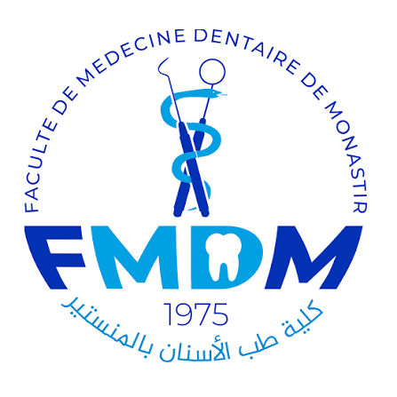

Chirurgienne dentiste, conseillère clinique
Quinze ans à porter plusieurs rôles en même temps, la pratique clinique, la recherche et la formation des praticiens. Ce qui me fait avancer, c'est de sortir de ma zone de confort et de me fixer de nouveaux objectifs, toujours dans un seul but, la sécurité et les soins aux patients.
Je suis chirurgienne dentiste, avec un parcours qui va de la pratique clinique à la recherche, en passant par la formation des professionnels de santé.
J'aime les environnements où il faut porter plusieurs sujets à la fois, un protocole d'étude clinique un jour, une session de formation le lendemain, une analyse de cas clinique le jour suivant. Cette capacité à passer d'un rôle à l'autre, tout en gardant un fil conducteur clinique, est ce qui revient dans chacune de mes expériences.
Sortir de ma zone de confort ne m'effraie pas, c'est souvent là que j'apprends le plus. Je suis aujourd'hui dans une dynamique de construction, je me fixe des objectifs et je travaille pour les atteindre, en gardant toujours le même repère, la sécurité et les soins aux patients.
Une constante revient dans mon parcours, plusieurs des postes que j'ai occupés ont été créés spécialement autour de mon profil, à la croisée de la clinique, de la recherche et de la formation.
Cette dynamique se retrouve aussi dans mon rapport aux professionnels de santé. Que ce soit comme formatrice technico clinique, coordinatrice de centre de formation, ou aujourd'hui en pilotant l'évaluation clinique d'un dispositif médical, je suis en contact constant avec les praticiens que je forme et que j'accompagne, et leurs retours guident directement la façon dont je fais évoluer les formations, les protocoles et les produits.
La clinique nourrit la recherche, la recherche nourrit la formation, et la formation ramène toujours vers le terrain.
Chaque poste m'a maintenue en lien direct avec des professionnels de santé, comme formatrice, comme coordinatrice ou comme interlocutrice clinique.
Poste officiellement intitulé Project Manager, Research and Clinical Communication, rattaché au département clinique. Il couvre cinq volets, du développement produit jusqu'au suivi client. Sur certains projets, je suis le lead, chargée de coordonner les interlocuteurs et d'organiser l'avancement, à l'aide d'un tableau de suivi partagé avec les personnes concernées.
Contribution au développement expérimental et à l'établissement de nouvelles fonctionnalités logicielles, préparation des protocoles d'expériences et de tests, gestion et analyse des données scientifiques et cliniques liées au développement, assistance aux chercheurs pendant les expériences, support à l'utilisation des nouveaux prototypes, contribution à l'évaluation technique et clinique de la performance du dispositif.
Évaluation des besoins avec les parties prenantes internes, recherche et développement, réglementaire, consolidation et suivi d'un plan de recherche, suivi des études universitaires, suivi des dispositifs de prêt et valorisation de l'investissement à travers les publications et retours d'expérience des praticiens, création de contenus et de publications à l'appui des données cliniques.
Veille scientifique et concurrentielle pour suivre les nouveautés et développements du secteur, rédaction de la revue annuelle de littérature, création et mise à jour d'une bibliothèque numérique regroupant l'ensemble des articles en lien avec le dispositif, classés selon leur pertinence.
Prise de contact avec les prospects, réalisation des démonstrations, envoi, suivi et relance des devis, présentation du dispositif lors de l'ensemble des événements scientifiques et congrès.
Formation à distance ou en présentiel des praticiens à la suite de l'acquisition du dispositif, support clinique par l'analyse des cas cliniques et l'accompagnement dans l'élaboration du plan de traitement.
Responsable de la formation des stagiaires à l'utilisation du dispositif médical et au respect des protocoles mis en place au sein de l'équipe clinique.
Garantie, dans son périmètre de responsabilité, de la pleine satisfaction de la clientèle, réalisation d'enquêtes de satisfaction auprès des clients.
Objectif du projet, collecter les données enregistrées par le dispositif et les exploiter pour concevoir un outil d'aide au diagnostic destiné aux praticiens, afin de faciliter la prise en charge du patient.
Traduction du besoin en objectifs clairs, dans le respect de l'échéance fixée par la date du congrès où le module devait être présenté.
Mise en relation de l'équipe recherche et développement et de l'équipe réglementaire, pour faire avancer leurs contraintes respectives en parallèle plutôt qu'en série.
Vision d'ensemble de l'avancement tenue à jour et partagée avec l'ensemble des interlocuteurs à l'aide d'un tableau de suivi commun.
Identification anticipée des freins réglementaires, pour les lever avant qu'ils ne bloquent l'avancement du projet.
Participation personnelle aux phases de test du module, en plus du pilotage du projet.
Présentation à la direction pour obtenir la validation du lancement avant la date du congrès.
Participation à la mise en place des études cliniques, dont une étude clinique pour l'évaluation de l'intégrité de la greffe osseuse à dix ans dans un protocole de soulevé de sinus. Organisation de la formation en implantologie et animation de soirées scientifiques avec les différents acteurs du secteur.
Support clinique pour les praticiens, organisation et animation de formations sur les implants dentaires. Suivi des retours d'expérience des utilisateurs, avec ajustement du contenu des formations suivantes selon les difficultés observées, et remontée des retours pertinents vers le développement produit. Mise en place d'études cliniques en partenariat avec des universités.
Interventions dans les écoles et lors d'événements pour promouvoir la santé bucco dentaire.
Pratique de la chirurgie orale au sein d'un service hospitalier universitaire.
Gestion de la démarche qualité et mise en place de protocoles pour les équipes d'assistantes dentaires. Participation à l'accord national des centres dentaires et animation de réunions. Assistance dentaire en travail à quatre mains.
Travail à quatre mains en chirurgie orale et assistance au bloc opératoire.
Omnipratique et prothèses, lors de séjours ponctuels.
Omnipratique, prothèses et stomatologie.
Chaque diplôme est venu approfondir un axe clinique ou pédagogique, souvent en combinant enseignement théorique, travaux pratiques et vacations hospitalières. Les points listés pour chaque programme sont une sélection, non une liste exhaustive des cours suivis.

…
Attitudes et utilité perçue pour le maintien et l'actualisation des connaissances et des compétences, étude menée auprès de cent quarante cinq chirurgiens dentistes en exercice en France.
Lire l'extrait (PDF) →Conçu dans le cadre du module Scénarisation et médiatisation de cours. Le chatbot identifie les véritables urgences à partir des symptômes rapportés, douleur, saignement, gonflement, choc, prothèse cassée, et oriente le patient vers un rendez-vous adapté ou des conseils immédiats.
Voir la fiche projet (PDF) →
…
Formation conclue par un forum professionnel à Paris.

…
Participation au congrès national de la Société Française de Parodontologie et d'Implantologie Orale, à Toulouse.

…
Étude des paramètres cliniques et chirurgicaux influençant le taux de succès des implants courts en secteur postérieur maxillaire atrophié.
Lire l'extrait (PDF) →
…

…